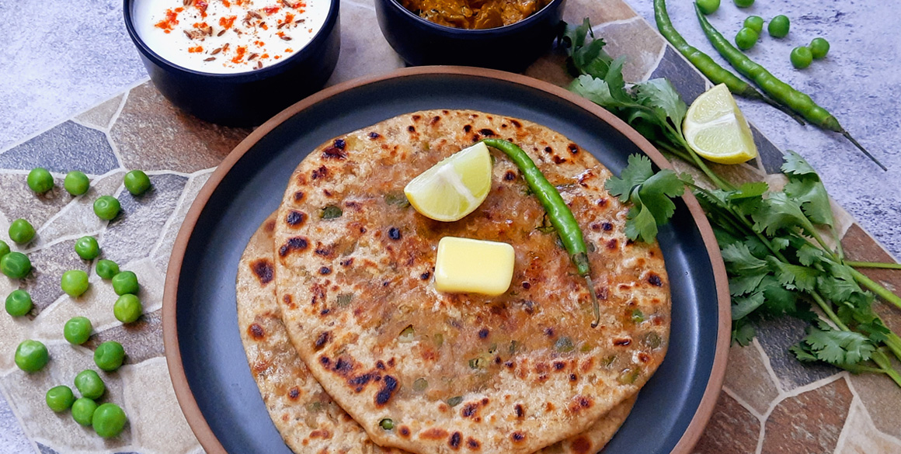
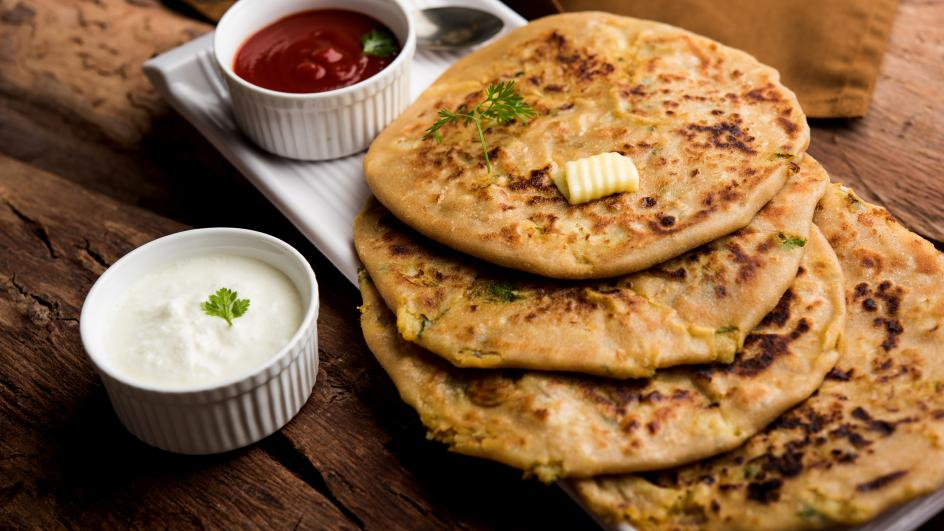

The Art of Homemade Parantha
The fresh, handmade paratha my grandmother would make was buttery and flaky, with tender inner layers and crisp outer layers that would shatter as you tore it. The way its smeared with ghee or butter (or, in my grandmothers case, Crisco!), layered, and rolled by hand creates a distinct taste and texture, unlike tha t of its store-bought counterpart. And unlike the round paratha from the grocery store, hers were always square. Seeing that plate of square paratha meant we were going to be eating well.
Crisp-golden on the outside and soft on the inside, Aloo Paratha are stuffed whole wheat flatbread with a spicy p otato filling. Served piping hot alongside creamy yogurt and spicy Indian pickles, Aloo Parathas make for the most s comforting breakfast, lunch, and dinner.
Paratha is made from a simple dough of flour, salt, oil, and water. The dough is divided and each piece is rolled out and smeared with a generous amount of ghee, butter, or shortening, and sprinkled with flour to help provide definition between the layers. It’s then rolled or folded in a specific way depending on the end shape you want, and then given a final roll. The paratha is then cooked. First, the paratha is cooked part of the way in a dry pan to ensure the inner layers are cooked through. Then, ghee is added to the pan and the paratha is cooked in the ghee until golden-brown.

Comments